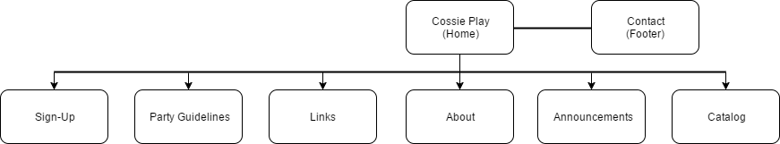

Goals
This website suppoused to extended this business . they have so many client from all ages (around 30-55) but below. The owner want to make younger audiance intrested with the cosplay because they do not have many younger audiance and sure this would be a big potential for getting high school kids and young adults coplaying. with a webiste, people would be intrested with cosplay and more people would come to the cosplay party also get the costumes made if they knew about CossiePlay.
Success Evaluation
To measure that the website works and success we can not count from the visitor. we need get the information who many client's income after the website created and look how many people sign-up to CossiePlay.
Target Audiance
Flowchart:
